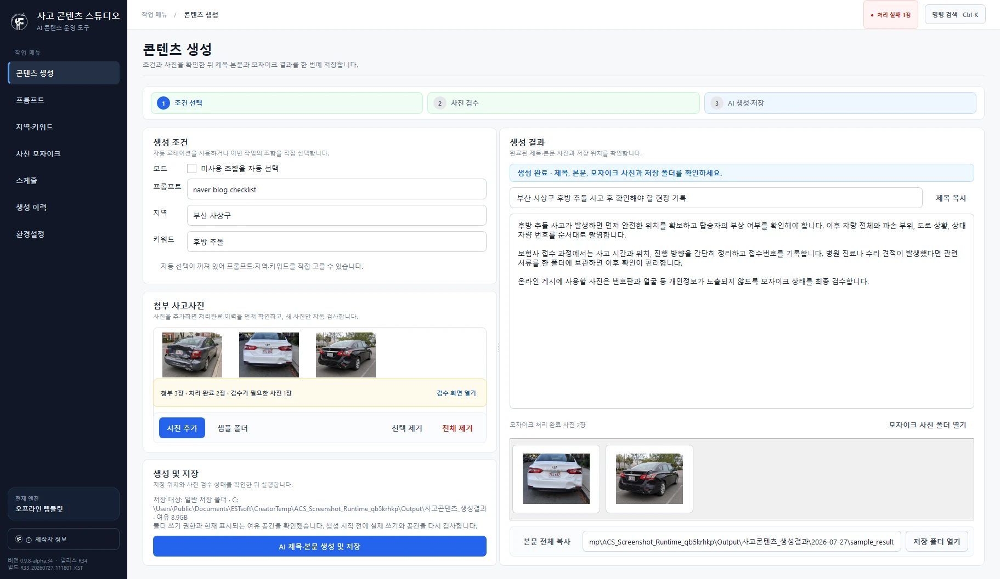
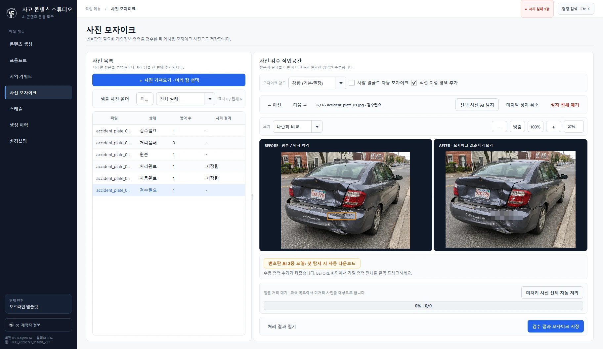
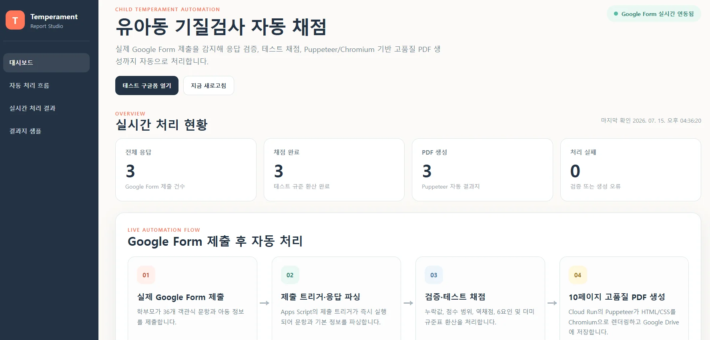
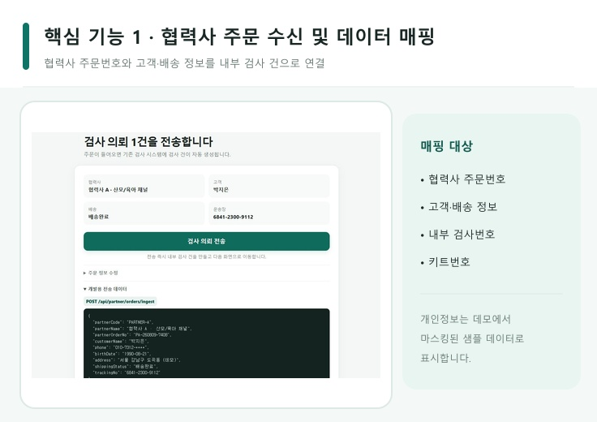
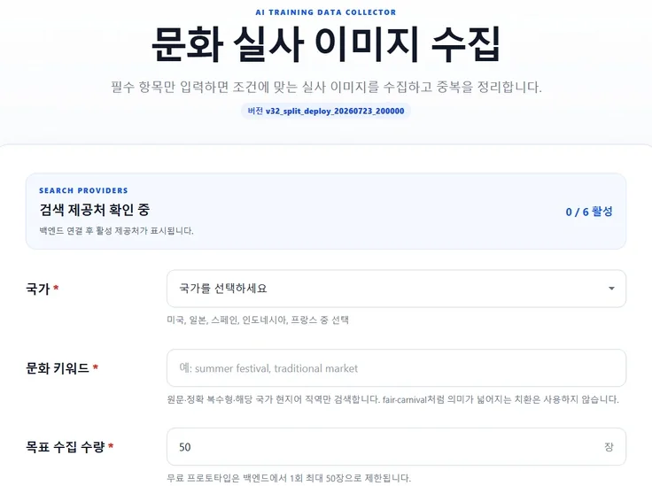

01WINDOWS AUTOMATION
ACS 사고 콘텐츠
스튜디오
콘텐츠 작성, 사진 검수, 예약 실행과 처리 이력을 하나의 Windows 프로그램으로 연결했습니다.
- 09
- 실제 화면
- LOCAL
- SQLite / DPAPI
- WIN
- 설치 패키지


REAL / 09 SCREENSAUTOMATION / SOFTWARE REBUILD
업무 흐름을 자동화하고, 오래된 프로그램의 화면·파일·데이터·통신을 분석해 유지보수 가능한 새 코드로 재구축합니다.
실제 작업으로 확인 ↓
WHAT CHANGES
우리가 파는 건
화면이 아닙니다.
SELECTED WORK
메인 화면에서는 가장 강한 작업만 보여줍니다. 각 프로젝트가 한 장면을 차지하고, 실제 화면과 결과가 먼저 보이도록 구성했습니다.
콘텐츠 작성, 사진 검수, 예약 실행과 처리 이력을 하나의 Windows 프로그램으로 연결했습니다.


REAL / 09 SCREENS협력사 주문, 내부 검사 상태, 고객 결과와 Callback 로그를 하나의 추적 가능한 흐름으로 연결했습니다.

ORDER → TEST → RESULT검색, 출처·라이선스 확인, 중복 제거와 메타데이터 정제를 하나의 수집 도구로 묶었습니다.

COLLECT → VERIFY → CLEANLIVE / SELECTED
메인에서는 완성도와 설명력이 높은 데모만 전면에 두고, 나머지 작업은 전체 프로젝트에서 찾게 하는 방향입니다.
HOW WE WORK
진행 단계는 유지하되, 한 번에 네 장의 카드를 던지지 않고 스크롤 위치에 따라 현재 단계 하나가 전면에 오도록 바꿨습니다.
필수 기능, 제외 범위, 외부 연동과 완료 기준을 개발 전에 문서로 확정합니다.
사용 흐름이 맞는지 확인하고, 방향이 잠긴 뒤 본 개발로 넘어갑니다.
핵심 시나리오와 실패 조건을 자동 테스트로 반복 검증합니다.
소스, 설정, 데이터 구조와 실행 방법을 함께 전달합니다.
SUAVEFORGE
이 페이지는 기존 홈을 수정하지 않은 별도 연출 실험판입니다.
기존 홈으로 돌아가기 ↗